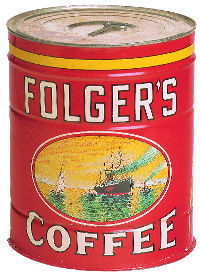

<< Previous
Contents
Next >>
Making your own real world
Replace pieces of your application for testing
These replacements look just like your normal objects
They can mimic and record behavior
They are called "mocks"
